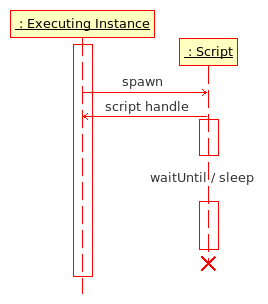

Script - File
A script is a of collection of commands, contained in a separate text file.
The extension is not mandatory, but for "self-documenting" purposes it is recommended to use .sqf.
Usage
Scripts are mainly used for game processes where timing is important (i.e. controlling the sequence of actions), as opposed to Function where the priority is on the returned result.
Thus scripts are the main "workhorse" for creating new functionality within VBS, controlling mission timelines, special events, dialogs, cut-scenes, etc.
Editing
Scripts are plain text files, and can be edited with any Text Editors (e.g. Notepad). If special characters are to be used in this file (e.g. non-English letters, outside of the ASCII range), the file must be encoded as UTF-8 (all text editors will have an "Encoding" option when saving the file).
Location
Mission folder
Normally scripts will reside in the mission source folder. That way the scripts will be mission-specific, and they will be exported together with the mission, so they can be utilized on any PC the mission is installed on.
Its location depends on the operating system and the installed VBS version, but it will be something like this: C:\Users\[UserName]\Documents\VBS2\mpmissions\[missionName]
Scripts located in the root of the mission folder are called without any path information, e.g. [] execVM "myScript.sqf". Sub-folders can be used, and are referred to by the folder name without any preceding backslash, e.g. if the mission folder contains a sub-folder named "scripts", then the call syntax would be [] execVM "scripts\myScript.sqf".
Install folder
It is also possible to place scripts in the VBS install folder (or any sub-folders beneath it).
No path information needs to be given (unless a sub-folder is used), and the engine will search this location after it looked in the mission folder.
These scripts are accessible from the editor, or in compiled SP or MP missions, but be aware that they will not work if the mission is moved to a different PC (as the files are local, and not packed with the mission).
Absolute path
When called with an absolute path, scripts can be located anywhere on the local harddrive, or even on a LAN, as long as it has been assigned to a drive letter (double-backslash syntax, e.g. \\LANPC1\DriveC\..., is not supported by VBS).
When calling the script, pass the full path, and it will be executed, whether in the editor or as a compiled SP or MP mission. [] execVM "c:\bi\scripts\myScript.sqf"
Just like with scripts located in the install folder, this method does not work if the mission is moved to a different PC.
Editor script folder
While working in the editor, a central script folder can also be used.
Its location is C:\Users\[UserName]\Documents\VBS2\scripts (adjust for OS and VBS version), and no special path needs to be provided for the engine to find the scripts located here.
This can be useful for test scripts that should be accessible for all missions during development (without having to copy them into every mission created), but which are not needed after deployment anymore. Once a mission has been exported and is run outside of the editor, the scripts in this folder are not accessible anymore.
Search sequence
The search sequence for scripts called without, or only a relative, path are:
Editor: mission, docs\scripts, root
SP: mission, (V1.x: root\scripts), root
MP: mission, (V1.x: docs\scripts), root
Syntax
Scripts for VBS are written using the SQF Syntax.
(While the older SQS Syntax is still available, its use has been deprecated, and should not be used anymore.)
Execution
Script Execution Diagram
Scripts can be executed from several points in the game:
Other scripts
Other Function
Initialization lines in the Mission Editor
Event Handlers in addon config files
The commands to execute scripts are:
execVM
compile a file in SQF Syntax and starts a parallel thread for it.
Content of countdown.sqf (3 second countdown):
for "_i" from 3 to 0 step -1 do
{
player sidechat str _i;
sleep 1;
};
"countdown.sqf" is called, and since it is running parallel, the output would be script done, 3, 2, 1, 0.
[] execVM "countdown.sqf";
player sidechat "script done";
spawn
Starts a parallel thread for already compile Code.
This is normally used for previously defined functions, but to 'spawn' a file, it needs to be compile and preprocessFile first (the effect of this type of call is pretty much identical to execVM):
[] spawn compile preprocessFile "countdown.sqf";
player sidechat "script done";
Just like for execVM, the output would be script done, 3, 2, 1, 0.
Both of these commands return a Script (Handle) which can be used with scriptDone, to check whether the script has finished or is still running.
_handle = [] execVM "countdown.sqf";
waitUntil {scriptDone _handle};
player sidechat "script done";
Since we now used the handle to determine when the called function (or script) was done, the output would be 3, 2, 1, 0, script done
call
Runs the compile code, and waits for it to finish.
Call uses the same syntax as spawn, but the process created is not running parallel. And instead of returning a handle, it returns the result of the last executed command in the called code.
Content of "countdown.sqf":
for "_i" from 3 to 0 step -1 do
{
player sideChat str _i;
sleep 1;
};
"done" // this is passed back to calling script
Calling script:
_return = [] call compile preprocessFile "countdown.sqf"; // reads the returned value
player sideChat ("script is " + _return);
Since the calling script now waits for the called script to finish, the output would now be 3, 2, 1, 0, script is done.